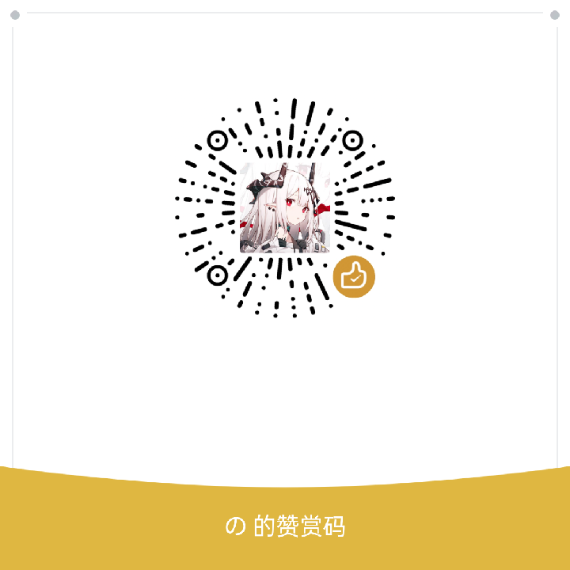

支持开发
这个项目完全免费开源，所有功能无需赞赏即可正常使用。若你愿意支持它的持续维护，可以扫下面的赞赏码。
微信赞赏

此赞赏码仅用于支持本二次开发版本的维护。若想支持上游原项目作者，请移步 原仓库 CYQawa/YunX 的捐赠渠道，两者互不相关。
除了赞赏，还有这些方式
- 把遇到的问题提成 Issue —— 一份能复现的报告就是实打实的贡献；
- 把使用体验、失败案例和失败的直链反馈回来，它们决定了下一步优化什么；
- 如果这个项目对你有用，把它讲给需要的人。
赞赏信息的展示
若你希望自己的名字（或昵称）出现在致谢里，可以匿名，也可以通过 Issue 提交截图与希望显示的名称，由维护者人工确认。